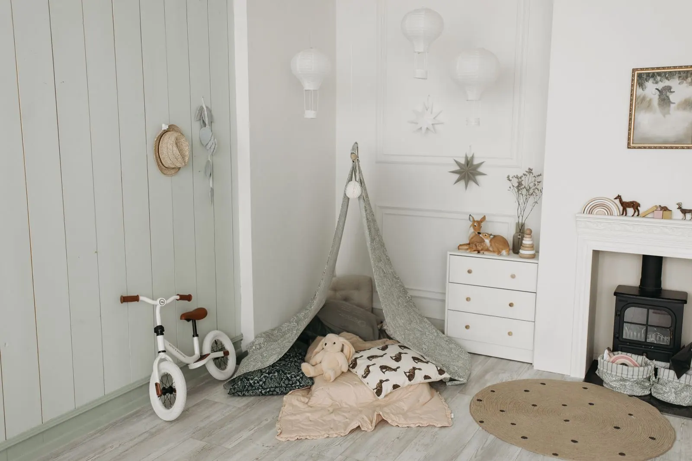

Início / Bebês
Bebês · 0 a 2 anos
Os primeiros dentes, com orientação desde o começo
Os dentes de leite seguram o espaço dos permanentes, ajudam na fala e na mastigação. Cuidar deles começa antes mesmo do primeiro aparecer.

Linha do tempo ilustrativa
Em que ordem os dentes de leite costumam nascer
Toque em cada etapa para ver os dentes na ilustração. As idades são faixas aproximadas: cada bebê tem seu tempo, e diferenças de alguns meses são comuns. Se tiver dúvida, converse com a dentista.
Por volta dos 3 anos, a maioria das crianças tem os 20 dentes de leite. Atraso ou ordem diferente nem sempre indicam problema, mas vale mostrar para a odontopediatra.
No dia a dia
Cuidados em cada fase do bebê
Antes dos dentes
- Limpe a gengiva com gaze ou fralda limpa umedecida em água, uma vez ao dia.
- Aproveite o momento para o bebê se acostumar com o toque na boca.
- Dúvidas sobre mamada e freio da língua podem ser vistas na consulta.
Primeiros dentes
- Escova infantil de cabeça pequena e cerdas macias.
- Creme dental com flúor na quantidade de um grão de arroz.
- Escove duas vezes ao dia, sempre à noite antes de dormir.
Nascimento dos dentes
- Salivação e vontade de morder são comuns.
- Mordedor limpo e gelado (não congelado) pode aliviar.
- Febre alta ou mal-estar não devem ser atribuídos só aos dentes: procure o pediatra.
Hábitos
Mamadeira, chupeta e açúcar
São os temas que mais aparecem na consulta do bebê. Não existe receita única: a dentista conversa com a família sobre a rotina real da casa.
- Mamadeira à noite: depois que os dentes nascem, leite ou suco na madrugada sem higiene depois aumentam o risco de cárie.
- Açúcar: a recomendação é evitar açúcar adicionado nos dois primeiros anos.
- Chupeta: o uso prolongado pode alterar a mordida; vale planejar a retirada com calma.

Seu bebê já tem o primeiro dentinho?
Então é hora da primeira consulta. Escolha a idade para começar.